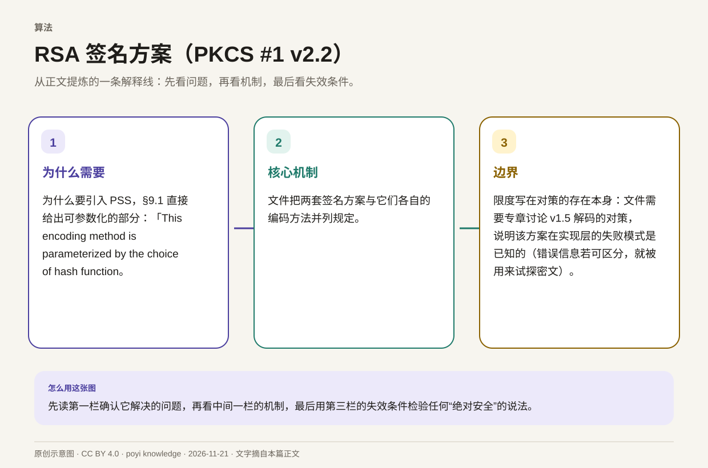
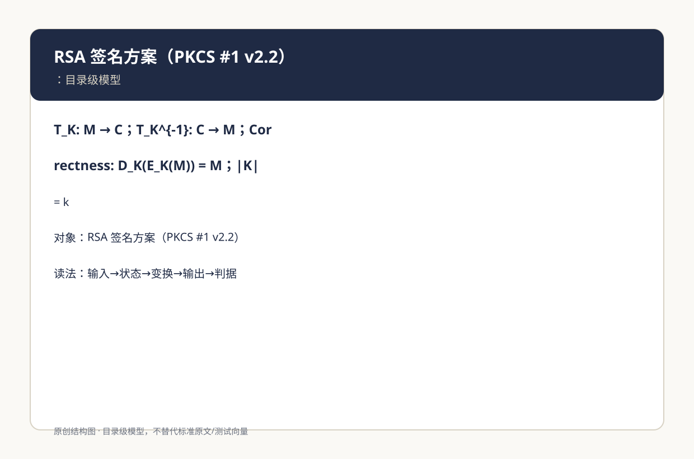

原理与机制
算法：RSA 签名（RSA Signature）。文件把两套签名方案与它们各自的编码方法并列规定。§8 之后列出用于签名的编码方法：「employed in the signature schemes and are specified here: EMSA-PSS and EMSA-PKCS1-v1_5.」也即 RSA 签名不是一件事而是两条路线：v1.5 那条简单确定，PSS 那条把随机盐与掩码生成函数纳入编码，再由同一份文件一并规范。

为什么重要
为什么要引入 PSS，§9.1 直接给出可参数化的部分：「This encoding method is parameterized by the choice of hash function, mask generation function, and salt length.」盐与掩码的存在使编码是概率性的，同一消息两次签名得到不同结果，安全性论证因此能建立在更明确的假设之上；文件把这一对比写在 PSS 与确定性方案的说明里。
应用与实例
用法上的分工体现在编码方法与实现要求两处。编码层规定两套方法可选（EMSA-PSS 与 EMSA-PKCS1-v1_5，见 principle 段所引），实现层则在 §7.2 的对策讨论里对 v1.5 的解码提出可执行措施：原文列出的对策包括「rigorous checking of PKCS #1 v1.5 conformance (and other redundancy) in decrypted messages, and the consolidation of error messages in a client-server protocol based on PKCS #1 v1.5」。也即继续用 v1.5 就必须把解码检查与错误信息合并做严。

边界与攻击面
限度写在对策的存在本身：文件需要专章讨论 v1.5 解码的对策，说明该方案在实现层的失败模式是已知的（错误信息若可区分，就被用来试探密文）。其次，PSS 的安全性依赖参数选取——哈希、掩码生成函数与盐长都要定（principle/why 段所引），盐长取零一类的极端配置会把它退化成确定性方案。最后，本文件是 Informational，其规范性来自对 PKCS #1 系列的记述而不是标准机构的强度认定。
历史与背景
版本事实按留存件印出的行复述（头部信息不进引号）：本文件是 RFC 8017、PKCS #1 v2.2、November 2016，编辑行印作 Moriarty、Kaliski 与 Rusch，类别为 Informational。文件把 v1.5 与 PSS 两条线并列收录，本身即说明这两代方案的共存是历史事实：确定性编码在先、概率性编码在后，而两者都保留在同一份规范里供实现选择。
技术参数与复算边界
该条目的形式模型是 (C\equiv M^e\pmod N,\qquad M\equiv C^d\pmod N)。输入：输入：RSA 签名的公开参数、密钥/随机数与消息；变量说明：M 明文整数，C 密文整数，N 模数，e 公钥指数，d 私钥指数。 预期输出：按 RSA 签名 的规范执行后得到可验证的输出或可比较的优势界。 复算必须给出输入、步骤、输出和单位；示例只演示流程，不替代标准测试向量。
复杂度由密钥长度、分组/状态规模、轮数、随机数质量和敌手模型共同决定；参数越界、版本差异与实现侧信道都可能使公式结论失效。已登记限制：该条目只给出形式模型与可复算步骤，不声称已完成生产实现、侧信道认证或第三方安全评估。
参数与状态规模
公式 (C\equiv M^e\pmod N,\qquad M\equiv C^d\pmod N) 的输入、输出和单位必须逐项登记；复算顺序为：1. 选择大素数 p,q，计算 N=pq 与 φ(N) 2. 选 e 与 φ(N) 互素，求 d≡e^{-1} mod φ(N) 3. 加密 C=M^e mod N，解密 M=C^d mod N。
状态规模、密钥长度、分组长度和轮数决定复杂度；这些量不能从标题推断，必须以标准或实现文档为准。
逐步示例与核验
形式模型与复算步骤
[C\equiv M^e\pmod N,\qquad M\equiv C^d\pmod N]
RSA 签名的公开参数、密钥/随机数与消息；变量说明：M 明文整数，C 密文整数，N 模数，e 公钥指数，d 私钥指数。1.选择大素数 p,q，计算 N=pq 与 φ(N)。2.选 e 与 φ(N) 互素，求 d≡e^{-1} mod φ(N)。3.加密 C=M^e mod N，解密 M=C^d mod N。边界：公式只覆盖已登记的参数与假设；参数取值、标准版本和实现细节仍以来源为准。
参考出处
- Wikipedia search entry for RSA 签名. https://zh.wikipedia.org/w/index.php?search=RSA%20%E7%AD%BE%E5%90%8D
- Handbook of Applied Cryptography (Menezes, van Oorschot, Vanstone). https://www.cacr.math.uwaterloo.ca/hac/
- RFC 8017: PKCS #1: RSA Cryptography Specifications v2.2. https://www.rfc-editor.org/rfc/rfc8017